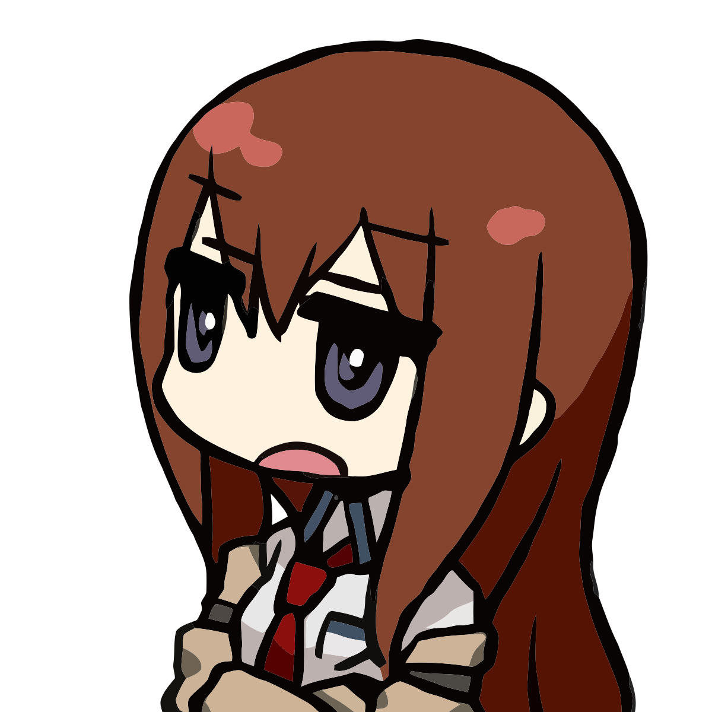
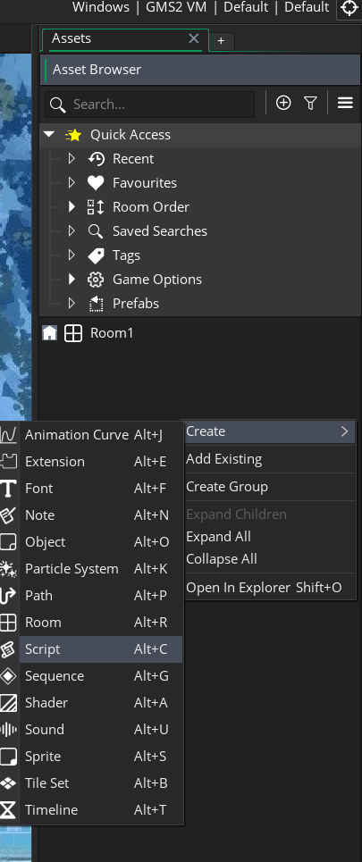
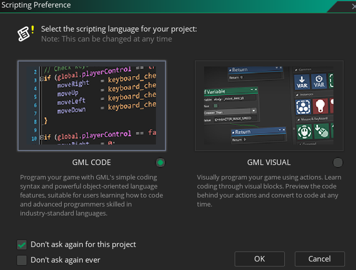
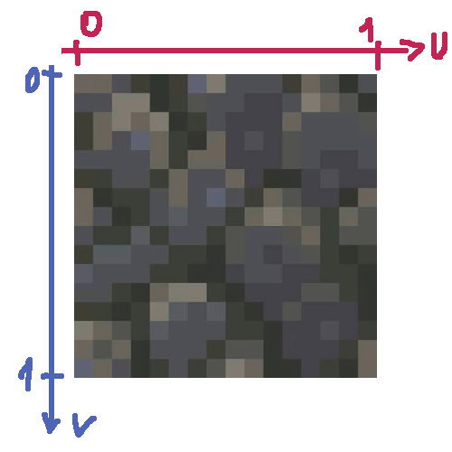
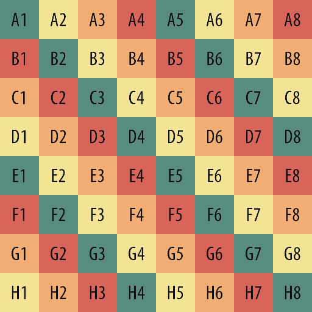
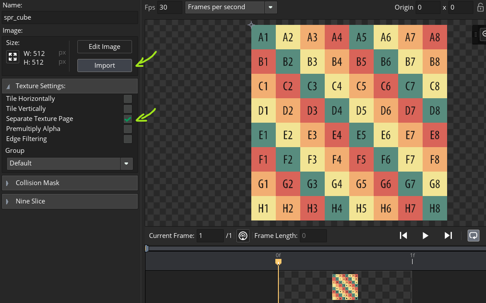
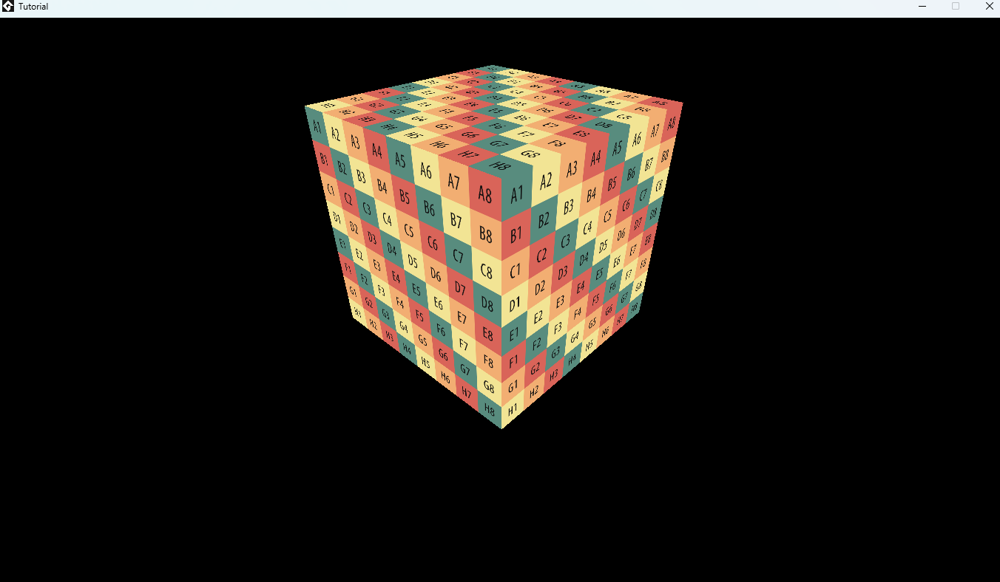
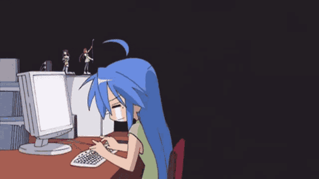
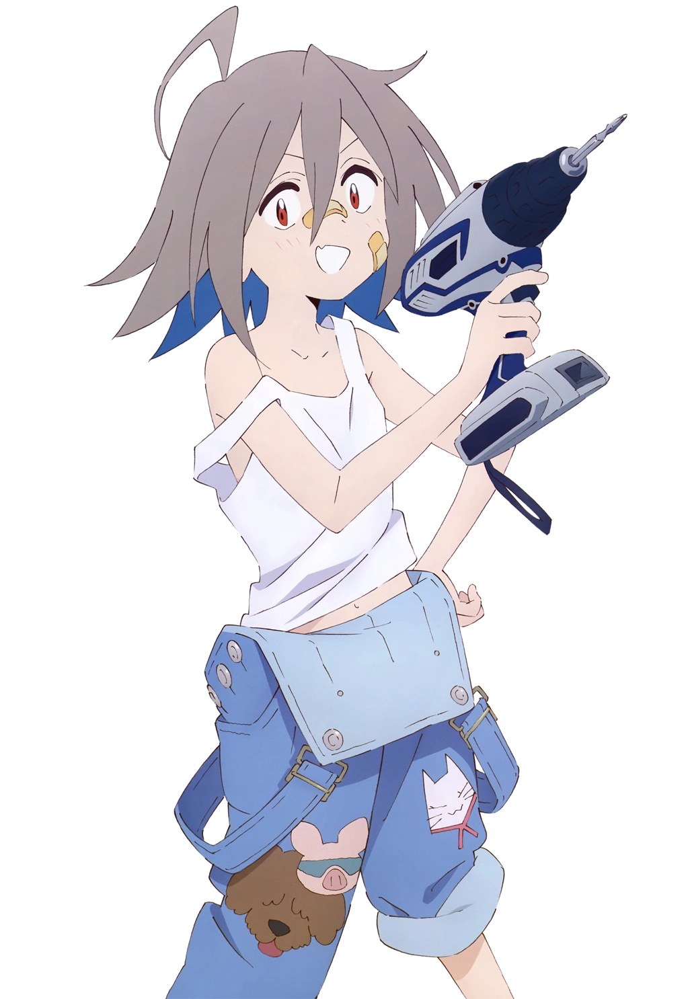

Intro
In previous article, we had learned about basic concepts of creating 3D games in GameMaker. In this article we will create a new game project and write a simple app with 3D cube on the scene.
Initial Setup
First, you'll need to install GameMaker Engine. Please note that it's free for personal use.
The easiest way is to download it from official Steam Page.
After installation, launch the app. You may need to log in.
Then simply create an empty (blank game) project and proceed to the next step.

Open your newly created blank project. You'll see the Asset Browser on the right.
If it's not visible by any reason, click Windows -> Asset Browser in the top left menu bar.
Let's create our first script, where we'll write the code. To do this, Mouse right-click -> Create -> Script.

You'll be prompted to select your preferred scripting style. Select GML Code and click OK.

A Script Editor window titled like "Script1" will open, along with an empty function with the same name. You can rename script by pressing F2. Let's call it script_3d and remove all the auto-generated code from the script (e.g. empty function).
Creating 3D Cube
Any 3D object consists of vertices, and each vertex contains specific information (for example, its position) that must conform to a specific format. Let's create the simplest format that will contain the 3D position and texture coordinates (UVs) of the object.
vertex_format_begin();
vertex_format_add_position_3d();
vertex_format_add_texcoord();
global.format3D = vertex_format_end();
Next, we need to be able to create the cube model itself. This will be a simple 1x1x1 dimension cube at (0,0,0) coordinate with the same texture on all faces.
Essentially, the cube has 6 square (quad) faces. But since the engine can't render quads yet, we'll use triangles instead. So, it's 6 x 2 = 12 triangles.
In the same script in which we created the format, below we will write a function that will generate a buffer with vertices for our cube model:
/// @return {Id.VertexBuffer}
function create_cube() {
var _vbuff = vertex_create_buffer();
vertex_begin(_vbuff, global.format3D);
// ================== TOP (Z = -0.5) ==================
vertex_position_3d(_vbuff, -0.5, 0.5, -0.5); vertex_texcoord(_vbuff, 0, 1);
vertex_position_3d(_vbuff, 0.5, -0.5, -0.5); vertex_texcoord(_vbuff, 1, 0);
vertex_position_3d(_vbuff, -0.5, -0.5, -0.5); vertex_texcoord(_vbuff, 0, 0);
vertex_position_3d(_vbuff, -0.5, 0.5, -0.5); vertex_texcoord(_vbuff, 0, 1);
vertex_position_3d(_vbuff, 0.5, 0.5, -0.5); vertex_texcoord(_vbuff, 1, 1);
vertex_position_3d(_vbuff, 0.5, -0.5, -0.5); vertex_texcoord(_vbuff, 1, 0);
// ================== BOTTOM (Z = 0.5) ==================
vertex_position_3d(_vbuff, 0.5, -0.5, 0.5); vertex_texcoord(_vbuff, 0, 0);
vertex_position_3d(_vbuff, -0.5, 0.5, 0.5); vertex_texcoord(_vbuff, 1, 1);
vertex_position_3d(_vbuff, -0.5, -0.5, 0.5); vertex_texcoord(_vbuff, 1, 0);
vertex_position_3d(_vbuff, 0.5, -0.5, 0.5); vertex_texcoord(_vbuff, 0, 0);
vertex_position_3d(_vbuff, 0.5, 0.5, 0.5); vertex_texcoord(_vbuff, 0, 1);
vertex_position_3d(_vbuff, -0.5, 0.5, 0.5); vertex_texcoord(_vbuff, 1, 1);
// ================== LEFT (X = -0.5) ==================
vertex_position_3d(_vbuff, -0.5, -0.5, -0.5); vertex_texcoord(_vbuff, 0, 0);
vertex_position_3d(_vbuff, -0.5, -0.5, 0.5); vertex_texcoord(_vbuff, 0, 1);
vertex_position_3d(_vbuff, -0.5, 0.5, 0.5); vertex_texcoord(_vbuff, 1, 1);
vertex_position_3d(_vbuff, -0.5, -0.5, -0.5); vertex_texcoord(_vbuff, 0, 0);
vertex_position_3d(_vbuff, -0.5, 0.5, 0.5); vertex_texcoord(_vbuff, 1, 1);
vertex_position_3d(_vbuff, -0.5, 0.5, -0.5); vertex_texcoord(_vbuff, 1, 0);
// ================== RIGHT (X = 0.5) ==================
vertex_position_3d(_vbuff, 0.5, 0.5, -0.5); vertex_texcoord(_vbuff, 0, 0);
vertex_position_3d(_vbuff, 0.5, 0.5, 0.5); vertex_texcoord(_vbuff, 0, 1);
vertex_position_3d(_vbuff, 0.5, -0.5, 0.5); vertex_texcoord(_vbuff, 1, 1);
vertex_position_3d(_vbuff, 0.5, 0.5, -0.5); vertex_texcoord(_vbuff, 0, 0);
vertex_position_3d(_vbuff, 0.5, -0.5, 0.5); vertex_texcoord(_vbuff, 1, 1);
vertex_position_3d(_vbuff, 0.5, -0.5, -0.5); vertex_texcoord(_vbuff, 1, 0);
// ================== BACK (Y = -0.5) ==================
vertex_position_3d(_vbuff, 0.5, -0.5, -0.5); vertex_texcoord(_vbuff, 0, 0);
vertex_position_3d(_vbuff, 0.5, -0.5, 0.5); vertex_texcoord(_vbuff, 0, 1);
vertex_position_3d(_vbuff, -0.5, -0.5, 0.5); vertex_texcoord(_vbuff, 1, 1);
vertex_position_3d(_vbuff, 0.5, -0.5, -0.5); vertex_texcoord(_vbuff, 0, 0);
vertex_position_3d(_vbuff, -0.5, -0.5, 0.5); vertex_texcoord(_vbuff, 1, 1);
vertex_position_3d(_vbuff, -0.5, -0.5, -0.5); vertex_texcoord(_vbuff, 1, 0);
// ================== FRONT (Y = 0.5) ==================
vertex_position_3d(_vbuff, -0.5, 0.5, -0.5); vertex_texcoord(_vbuff, 0, 0);
vertex_position_3d(_vbuff, -0.5, 0.5, 0.5); vertex_texcoord(_vbuff, 0, 1);
vertex_position_3d(_vbuff, 0.5, 0.5, 0.5); vertex_texcoord(_vbuff, 1, 1);
vertex_position_3d(_vbuff, -0.5, 0.5, -0.5); vertex_texcoord(_vbuff, 0, 0);
vertex_position_3d(_vbuff, 0.5, 0.5, 0.5); vertex_texcoord(_vbuff, 1, 1);
vertex_position_3d(_vbuff, 0.5, 0.5, -0.5); vertex_texcoord(_vbuff, 1, 0);
vertex_end(_vbuff);
return _vbuff;
}Textures, UVs and Sprites
This section will discuss how our cube will look. Specifically, how the Image is overlaid onto the Cube Model.

In this example we'll use the approach of placing only one sprite per texture.
In 2D games, it's common to place multiple sprites on the same texture. This is called a Texture Atlas.
You can create a sprite in the same way as a script: right-click in the asset browser window, and then select Sprite.
Create one sprite for our cube, you can call it spr_cube.
Next, download the image below. We'll use it to check that the texture is correctly applied to the cube.

Import the image into the sprite. You'll be informed that this action is undoable; just click OK. Important: check the box next to "Separate Texture Page". This is necessary so that all sprites are located on separate textures, not on a single one.

Writing shaders
We already know what a Shader is. But shader execution is a pipeline process, consisting of several sequential programs. In GameMaker, you have two main types of shaders available:
Great, now let's write the simplest shaders - it will just apply the texture on the model. Create a new shader in the asset browser and name it shd_3d. A window will open with two tabs containing the vertex and fragment shader code. Remove all the auto-generated code and write the following:
// Vertex shader (shd_3d.vsh)
attribute vec3 in_Position; // (x,y,z)
attribute vec2 in_TextureCoord; // (u,v)
varying vec2 v_vTexcoord;
void main()
{
vec4 object_space_pos = vec4( in_Position, 1.0 );
gl_Position = gm_Matrices[MATRIX_WORLD_VIEW_PROJECTION] * object_space_pos;
v_vTexcoord = in_TextureCoord;
}in_Position and in_TextureCoord are standart built-in names for shader attributes. Because our defined 3D format has only 3D position and texture coordinates, we use only them.
gm_Matrices - is a built-in array that contain various matrices. MATRIX_WORLD_VIEW_PROJECTION is self-explanatory name.
This matrix stores the result of World (aka Model), View and Projection matrices multiplication, and is needed to
translate 3D vertex positions to 2D screen.
gl_Position is a built-in output variable in the vertex shader that defines the final,
processed 4D vector position (x, y, z, w) of a vertex in Normalized Device Coordinates (NDC) space.
Once assigned, GameMaker translates gl_Position behind the scenes into a range between -1.0 and 1.0 for the X and Y axes.
Anything outputting outside this range is clipped and will not render on screen.
// Fragment shader (shd_3d.fsh)
varying vec2 v_vTexcoord;
void main()
{
gl_FragColor = texture2D( gm_BaseTexture, v_vTexcoord );
}
gm_BaseTexture - is a built-in 2D sampler (a variable that stores texture reference).
When you call any draw_*() function - for example, draw_sprite() - or
vertex_submit() function,
it binds passed sprite/texture argument value to this sampler,
so you can access it in the shader.
texture2D - this function calculates a color value of pixel on the texture using provided UV coordinates.
gl_FragColor - is a built-in output variable in the fragment shader that defines the final color (r,g,b,a) of the pixel.
Note that the color components are stored in range from 0 to 1.
Objects, Instances & Rooms
Before we continue, we need to become familiar with vital game concepts: Objects, Instances and Rooms.
Let's create three Objects (also in Asset Browser): obj_cube, obj_camera and obj_renderer.
. Second object will be a camera, so we can see the game world. And the last one is a system object which will control
the render pipeline.
obj_cube - is our 3D cube model representation.
It will:
Before continue, we need to set the Sprite - spr_cube.
You can select it in Object Editor, or assign the value to sprite_index in the code.
Okay, for this object we need to create these events:
/// @desc obj_cube - Create Event
// This code will be executed once when instance created
x = 0;
y = 0;
z = 0;
xrot = 0;
yrot = 0;
zrot = 0;
xscale = 8;
yscale = 8;
zscale = 8;
vbuff = create_cube();
Render = function() {
// Transform the cube - translate, rotate and scale
var _matWorld = matrix_build(x, y, z, xrot, yrot, zrot, xscale, yscale, zscale);
matrix_set(matrix_world, _matWorld);
var _texture = sprite_get_texture(sprite_index, image_index);
vertex_submit(vbuff, pr_trianglelist, _texture);
// Restore the matrix
matrix_set(matrix_world, matrix_build_identity());
}/// @desc obj_cube - CleanUp Event
// This code will be executed once when instance destroyed
// Garbage Collector (GC) won't clear vertex buffers
// We need to do it manually
if (vertex_buffer_exists(vbuff)) {
vertex_delete_buffer(vbuff);
}Next object is obj_camera - 3D Camera. It will proceed our view and projection matrices. Also it will implement basic rotation and movement so we can fly in the game world.
/// @desc obj_camera - Create Event
// This code will be executed once when instance created
x = 10;
y = 10;
z = -10;
lookX = 0;
lookY = 0;
lookZ = 0;
face = 45;
pitch = 45;
sensitivity = 10;
movespeed = 1;
// Projection Matrix
fov = 60;
aspect = 16/9;
clipNear = 1;
clipFar = 3200;
matProj = matrix_build_projection_perspective_fov(fov, aspect, clipNear, clipFar);
// View Matrix
matView = [];
// Camera
camera = camera_create();
Apply = function(pm = matProj, vm = matView) {
var _cam = camera;
camera_set_proj_mat(_cam, pm);
camera_set_view_mat(_cam, vm);
camera_apply(_cam);
}/// @desc obj_camera - Step Event
// This code will execute every frame before any Draw (Render) event
// Rotate camera
var _w = display_get_width();
var _h = display_get_height();
var _mx = display_mouse_get_x();
var _my = display_mouse_get_y();
face -= (_mx - _w / 2) / sensitivity;
pitch -= (_my - _h / 2) / sensitivity;
// Center the mouse cursor
display_mouse_set(_w / 2, _h / 2);
// Move camera
var _forward = keyboard_check(ord("W"));
var _backward = keyboard_check(ord("S"));
var _left = keyboard_check(ord("A"));
var _right = keyboard_check(ord("D"));
var _up = keyboard_check(vk_space);
var _down = keyboard_check(vk_lshift);
var _moveFB = _forward - _backward;
var _moveLR = _left - _right;
var _moveUD = _up - _down;
if (_moveFB != 0) {
x += lengthdir_x(movespeed * _moveFB, face);
y += lengthdir_y(movespeed * _moveFB, face);
}
if (_moveLR != 0) {
x += lengthdir_x(movespeed, face + 90 * _moveLR);
y += lengthdir_y(movespeed, face + 90 * _moveLR);
}
z -= movespeed * _moveUD;
// Update View Matrix
lookX = x + dcos(face);
lookY = y - dsin(face);
lookZ = z - dtan(pitch);
matView = matrix_build_lookat(x, y, z, lookX, lookY, lookZ, 0, 0, 1);
// End game when press `Escape`
if (keyboard_check_pressed(vk_escape)) {
game_end();
}
And the last - obj_renderer.
This object will control the entire render pipeline:
GPU setting, shaders, render order, post-processing ect.
Render is a complex process, and I'll cover important
topics like depth, culling, mipmapping and other
techniques in the next article.
/// @desc obj_renderer - Create Event
// This code will be executed once when instance created
// Turn off automatic default render - we will do it manually
application_surface_draw_enable(false);
/// @desc obj_renderer - Draw Event
// This code will be executed every frame when game renders instances
// Everything will be drawn on the `application_surface`
// This is a default system render buffer
// First, let's setup the GPU for 3D
// Save current state, and then
// turn on ZWrite and ZTest
gpu_push_state();
gpu_set_ztestenable(true);
gpu_set_zwriteenable(true);
// Clear game screen - fill it with black color
draw_clear(c_black);
// Set projection and view matrices from the camera
with (obj_camera) {
Apply();
}
// Set shader and Render
shader_set(shd_3d);
with (obj_cube) {
Render();
}
shader_reset();
gpu_pop_state();/// @desc obj_renderer - Post-Draw Event
// This code will be executed every frame when game renders views on game window
// Displays the contents of the application surface
// stretched to fit the game window
var _ww = window_get_width(), _wh = window_get_height();
draw_surface_stretched(application_surface, 0, 0, _ww, _wh);
The final step before we run our game! Thank goodness it's the easiest one~
You need to find (or create) any Room in the Asset Browser. By default it's called Room1.
You can rename it, for example - rm_one.
Double click on it, and the Room Editor window will be opened.
All that you need to do is just dran-n-drop our three objects - obj_cube, obj_camera, obj_renderer - from
the Asset Browser somewhere in the Room. There are default "Instances" layer for it. Done!
Play it!
Just press F5 (or using menu bar, Build->Run) - it will build and lauch the game.
Probably the first thing you see is a pitch-black window. Just rotate the camera by mouse or move
around the world by WASD keys. Then you will see our cube!

Conclusion

In this article, we managed to create a simple scene with a simple 3D object - cube, and also be able to examine it from all sides!
Of course, This is still far from a real 3D game, but the first brick has been laid.
For the sake of simplicity, I had to omit some details that will be discussed in the following articles.

Thank you for reading!
If you liked the article, you can share it and/or write your impressions and wishes to me personally in the
guest book.
@Nick_Nishort
Go to home page